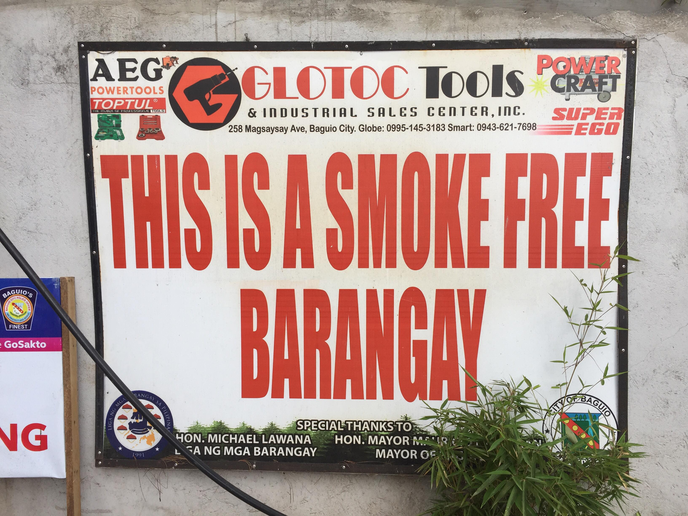

Lopez Jaena is one of the barangays of Baguio City in the province of Benguet within the Cordillera Region XIV in the norther part of the big island of Luzon. The barangay has the mission to instill values that lead to educational advancement and enrichment of the social and cultural life of the community. They envision an excellent and model community, the home of notable constituents and the pride and honor of the country.


Drugs - is a chemical substance that brings about physical, emotional, or behavioral change in a person taking it.
- Any substance may be harmful when taken in excess. Some of it can also be harmful if taken in dangerous combinations or by hypersensitive (allergic) person in ordinary or even small accounts.
- Any use of a licit or illicit substance which results in the individual’s physical, mental, or social impairment is substance abuse.
- Problems and peer pressure.
In behavior, in appearance and in mood-occur in a person who is abusing a substance. Sudden changes occur in the person’s disposition from pleasant to unpleasant.
- Maintain physical wellness and mental health. - Use them properly. - Understand yourself. - Develop your potentials. Engage in wholesome, productive and fulfilling activities. - Learn to relate effectively to whom you can communication your problems freely. - Learn to cope with problems without using of substances. - Seek professional help. - Develop strong moral and spiritual foundations.
According to World's Health Organization,

***The most commonly abused drug in Lopez Jaena is shabu and marijuana.
| PROGRAM/PROJECT/ACTIVITIES | OBJECTIVE |
|---|---|
| Sports Program | To be able to provide Alternative Activities for the Prevention Drug Abuse and making the Residents Specially the Uninfected persons |
| Advocacy T-Shirts | |
Seminars on Drug Prevention - for the Drivers and Professionals |
|
| Purchase of Sports Facilities |
| PROGRAM/PROJECT/ACTIVITIES | OBJECTIVE |
|---|---|
| Additional Installation of CCTV | To be able to create visibility areas, person, agencies for contact for information etc. |
| Regular Foot Patrol | |
More Police Visibility |
|
| Free Drug Testing for Barangay Officials |